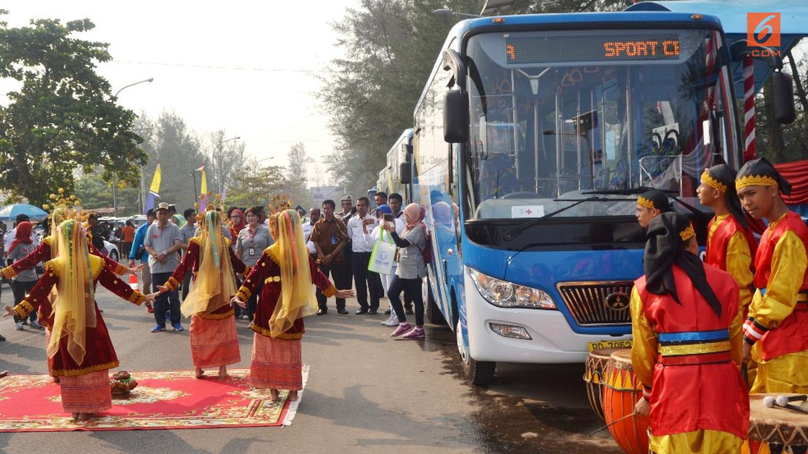
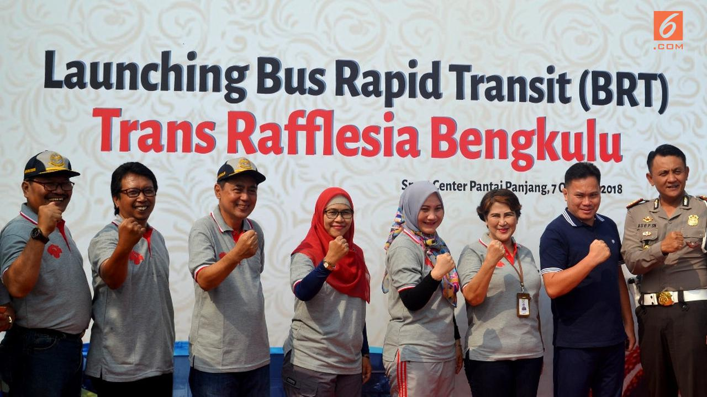
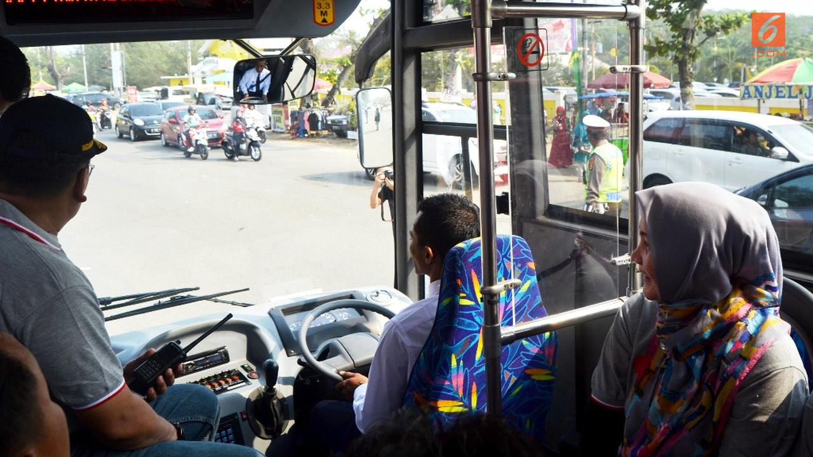

Diposting Oleh Yuliardi Hardjo Putro, Ahmad Ibo

Liputan6.com, Bengkulu - Memasuki usia setengah abad atau 50 tahun sejak lepas dari Provinsi Sumatera Selatan, tenyata Bengkulu masih sangat jauh tertinggal. Geliat perkembangan Bengkulu mulai terlihat secara perlahan, salah satunya dengan beroperasinya Bus kota dengan sistem persinggahan cepat atau Bus Rapid Transit (BRT).
Kepala Dinas Perhubungan Provinsi Bengkulu Bambang Budi Djatmiko menjelaskan, sebanyak lima unit bus tipe medium bantuan Kementerian Perhubungan RI sudah beroperasi melayani penumpang. Operasional tahap awal ini baru melayani penumpang untuk jalur atau koridor satu dari tiga koridor yang disiapkan.
"Ujicoba moda transportasi masal ini hingga awal Januari tidak dipungut biaya atau gratis," ungkap Budi di Bengkulu Minggu 7 Oktober 2018.
Tahun 2019, Kementrian Perhubungan kembali akan menambah armada sebanyak 5 unit dan akan ditambah lagi guna melengkapi pelayanan para pengguna angkutan umum tersebut di tiga koridor.Koridor satu yang sudah beroperasi tersebut melewati jalur Terminal Betungan di Kabupaten Seluma melewati kawasan wisata sepanjang Pantai Panjang Kota Bengkulu dan berakhir di wilayah Pasar Pedati Kabupaten Bengkulu Tengah.
Jika operasional Bus Kota Bengkulu yang diberi nama Trans Rafflesia ini sudah normal, maka tarif yang disiapkan untuk masyarakat umum pengguna moda transportasi ini hanya sebesar Rp 3 ribu untuk sekali jalan. Seluruh lokasi persinggahan atau shelter sedang dibangun di puluhan titik pemberhentian dengan analisis lokasi pusat keramaian, pusat perbelanjaan, kawasan perkantoran, dan pusat pendidikan tingkat sekolah maupun kampus.
"Semua perangkat sedang disiapkan termasuk peraturan daerah terkait tarif angkutan," tegas Budi Djatmiko.
========================================2 dari 3 Halaman======================================

Beroperasinya Bus Trans Rafflesia Bengkulu merupakan kado istimewa menjelang peringatan 50 tahun terbentuknya Provinsi Bengkulu pada tanggal 18 November 2018 mendatang. Bengkulu terbentuk menjadi sebuah provinsi setelah lepas dari Sumatra Selatan pada tahun 1968 lalu.
Asisten bidang perekonomian Pemerintah Provinsi Bengkulu Yuliswani mengatakan, layaknya sebuah ibukota provinsi, Kota Bengkulu dan wilayah penyanggah yaitu Kabupaten Seluma dan Bengkulu Tengah memang harus ada alat transportasi masal. Selain menjadi simbol kemajuan satu daerah, Bus Kota juga akan mengurangi beban kepadatan lalu linta di jalan raya.
"Ini kado ulang tahun emas 50 tahun Bengkulu, masyarakat sangat atusias," ungkap Yuliswani.
Pemerintah Provinsi Bengkulu saat ini memang tengah meggenjot sektor pariwisata untuk dikembangkan secara luas. Salah satunya dengan mencanangkan tahun kunjungan wisata atau Visit Bengkulu Years 2020. Kehadiran Bus Kota koridor satu yang melintasi kawasan wisata Pantai Panjang ini merupakan sumbangan besar bagi rencana pengembangan pariwisata tersebut.
Selain Pantai Panjang, Kota Bengkulu juga memiliki potensi wisata sejarah peninggalan Inggris yaitu Benteng Marlborough. Kawasat wisata sejarah itu terintegrasi dengan perkampungan para pedagang Tiongkok yang disebut China Town dan beberapa situs sejatrah lain yang berada dalam satu kawasan.
"Koridor satu ini melewati kawasan wisata terintegritas tersebut," lanjut Yuliswani.
Gubernur Jendral Inggris Sir Thomas Stanford Raffles yang pernah memimpin Bengkulu tercatat dalam sejarah menemukan puspa langka bersama ahli botani bernama Arnoldi di kawasan hutan menuju Kabupaten Kepahiang. Temuanyang diberi nama Rafflesia Arnoldi tersebut diabadikan menjadi nama atau sebutan untuk Provinsi Bengkulu yang dikenal dengan istilah Bumi Rafflesia.
"Alat transportasi ini kita namakan Trans Rafflesia karena memiliki nilai sejarah yang panjang," kata Yuliswani.
========================================3 dari 3 Halaman======================================

Untuk mengelola operasional bus Trans Rafflesia, Pemerintah Provinsi Bengkulu menggandeng Perum DAMRI sebagai operator. Sebanyak lima unit bus bantuan tahap awal kementrian perhubungan RI ini baru melayani satu koridor saja.
Direktur Perum DAMRI Setia Milatia Moemin mengatakan, bus akan beroperasi pada jam 06.00 hingga 18.00 wib setiap hari. Setiap bus akan menlakukan perjalanan sebanyak enam kali bolak balik. Artinya akan ada 60 trip perjalanan bus jenis medium dengan fasilitas ac dan petunjuk shelter pemberhentian digital di dalam bus.
"Selama 90 hari pertama, operasional ditanggung melalui APBD Provinsi Bengkulu," ujar Setia.
Menurutnya, moda transportasi publik unu harus ditingkatkan, tidak harus gratis, tetapi berbiaya murah, seperti yang dilakukan DAMRI di seluruh wilayah Indonesia. Upaya Gubernur Bengkulu bersama DPRD mensubsidi angkutan pubik ini patut diapresiasi untuk kepetingan kemanusiaan.
Kualitas dan kenyamanan dalam layanan transortasi ini sudah diperhitungkan oleh DAMRI, temasuk keselamatan para penumpang terutama kaum perempuan. Setiap bus akan ditempatkan kondektur yang mengutamakan pelayan dan perhatian terhadap penumpang perempuan, lansia dan ibu hamil.
"Bengkulu wilayah yang aman dan kesadaran masyarakatnya tinggi, tetapi standar antisipasi kita tetap jaga," kata Setia Milatia Moemin.